In China Employee Termination in 2026: Role-Relay Payroll Operating Memo for Foreign Employers
Key takeaways
- In China employee termination, late-cycle errors usually start at handoff points between functions, not inside payroll formulas.
- A role-relay model (HR→Manager→Payroll→Finance→Vendor/EOR) with acceptance criteria at each transfer improves execution quality.
- Each handoff should be treated as a control gate: low-quality input must trigger correction or escalation before ownership transfer.
- Contested components should never pass through relay gates without explicit classification and scope control.
- Local uncertainty should be logged and confirmed before any release decision.
The operating problem: handoffs fail quietly until payroll lock
Most foreign employers do not lack policies; they lack reliable transfer quality between teams. HR may prepare a case file, but the manager submits incomplete support. Payroll receives a package with ambiguous component labels. Finance authorizes payout without full visibility on exception risk. By the time issues are visible, payroll lock is near and teams default to high-risk shortcuts.
A role-relay memo fixes this by defining what “good input” looks like for each ownership transfer. If a handoff does not meet acceptance criteria, the next owner is required to reject or escalate. This makes control failures visible earlier and reduces surprise corrections.
Relay map: who passes what to whom
- HR → Manager: case basis and required supporting checklist.
- Manager → Payroll: validated business rationale and signed support records.
- Payroll → Finance: component-level payout map with treatment notes and risk tags.
- Finance → Vendor/EOR (or execution ops): approved payout scope and funding/ledger confirmation.
- Vendor/EOR → HR/Payroll closure: statutory/offboarding completion and closure evidence.
Regulatory baseline (concise)
The Labor Contract Law sets core termination and compensation framework. The Social Insurance Law supports obligations relevant to termination-month closure. Technical tax references provide context for final-pay treatment documentation. Across sources, the practical message is consistent: process quality and evidentiary integrity are central to defensible outcomes.
Where uncertainty exists (city-level interpretation or technical edge cases), teams should apply local confirmation before release.
Handoff acceptance criteria (must-pass checks)
HR → Manager
- Basis code assigned and explained
- Required evidence checklist attached
- Risk tag (standard/contested/high-risk) assigned
Manager → Payroll
- Business rationale complete and signed
- Supporting records complete and dated
- Any unresolved points explicitly flagged
Payroll → Finance
- Components split (uncontested vs contested)
- Treatment notes recorded per component
- Run-scope recommendation documented
Finance → Vendor/EOR/Execution
- Approved payout scope confirmed
- Off-cycle authorization (if any) documented
- Cost-center and ledger mappings finalized
Vendor/EOR → Closure Owner
- Processing confirmations delivered
- Offboarding/statutory closure evidence attached
- Residual risk items listed with owners
Failure-to-fix mapping (operations-first)
| Failure signal | Likely handoff break | Immediate fix | Preventive control |
|---|---|---|---|
| Missing support docs at lock | Manager→Payroll | Hold contested components | Manager pre-submit checklist with mandatory fields |
| Mixed messaging to employee | HR↔Payroll | Pause release and align summary | Single source-of-truth case memo |
| Manual late-cycle payout edits | Finance→Execution | Move to controlled off-cycle path | Authority matrix lock + escalation trigger |
| Repeated off-cycle corrections | Multi-handoff | Root-cause review by relay stage | Handoff quality KPI by function |
Exception and escalation protocol
- Detect handoff failure and classify severity.
- Stop ownership transfer until minimum acceptance criteria are met.
- For contested/high-risk items, freeze in-cycle release scope.
- Assign escalation owner and response SLA.
- Use controlled communication template.
- Close incident with corrective and preventive actions.
Required document checklist
- Case summary memo with risk tag
- Contract and amendment records
- Manager support records
- Versioned payment worksheet + treatment notes
- Approval records by role
- Communication log
- Payroll output + reconciliation
- Closure evidence pack
System controls and KPI mapping
Recommended controls:
- Handoff acceptance checklist in workflow tool.
- Reject-transfer function when mandatory fields missing.
- Component-level scope tags (release/hold/escalate).
- Immutable version control for worksheets and communications.
- Escalation timer with SLA reminders.
Recommended KPIs:
- Handoff rejection rate by function
- Contested-component leakage into in-cycle run
- Off-cycle correction volume
- Communication mismatch incidents
- Closure completeness score
Common mistakes and prevention
- Mistake: treating handoff as email forwarding.
Prevention: enforce acceptance checklist and reject-transfer rules.
- Mistake: no owner for unresolved items.
Prevention: mandatory risk owner field.
- Mistake: finance approval without component clarity.
Prevention: require component split and treatment notes.
- Mistake: closure assumed after payment only.
Prevention: evidence-based closure checklist.
What to do now (10 actions)
- Implement role-relay map in termination SOP.
- Publish acceptance criteria by handoff step.
- Configure reject-transfer in workflow system.
- Add risk tags and component scope fields.
- Enforce authority matrix for payout changes.
- Launch escalation SLA tracking.
- Standardize communication templates.
- Monitor handoff KPIs monthly.
- Run quarterly relay simulation drill.
- Update controls from top recurring handoff failures.
What to watch next
Foreign employers should monitor local practice on evidentiary expectations and adjust acceptance criteria accordingly. Over time, relay KPIs will reveal where quality failures concentrate and where training or workflow redesign is needed.
FAQ
1) Why use a role-relay model?
Because most termination failures occur at ownership transfers, not in isolated functional tasks.
2) Can contested items ever pass through normal relay?
Only if explicitly split and approved within controlled scope rules.
3) Who can override a failed handoff?
Only authorized escalation owners under documented exception governance.
4) Does this work for EOR setups?
Yes, if client vs EOR relay ownership is explicitly defined.
5) Does this replace legal advice?
No. It is an operational framework and should be paired with local professional advice.
Disclaimer
This content is informational only and does not constitute legal, tax, or accounting advice. China employment implementation can vary by city and case facts. Employers should seek qualified local professional advice for case-specific decisions.
Sources
- National People's Congress. Labor Contract Law of the People's Republic of China. Official English text: http://www.npc.gov.cn/zgrdw/englishnpc/Law/2007-12/13/content_1384064.htm (accessed 2026-02-26).
- National People's Congress. Social Insurance Law of the People's Republic of China. Official English text: http://www.npc.gov.cn/zgrdw/englishnpc/Law/2009-02/20/content_1471106.htm (accessed 2026-02-26).
- PwC Worldwide Tax Summaries. People's Republic of China – Individual taxes on personal income. https://taxsummaries.pwc.com/peoples-republic-of-china/individual/taxes-on-personal-income (accessed 2026-02-26).
- Littler. Key Recent Developments in China's Employment Law: A China-U.S. Comparative Perspective for Multinational Employers. 2025-09-16. https://www.littler.com/news-analysis/asap/key-recent-developments-chinas-employment-law-china-us-comparative-perspective.
China-Payroll.com supports foreign employers with compliance-first EOR and payroll operations for termination workflows.
Need local employment support in China?
If you need a compliance-first partner for hiring, payroll, and risk controls in China, China-Payroll.com can help evaluate the right setup.
Image Prompt Pack
Create a 16:9 hero image for article title: 'In China Employee Termination in 2026: Role-Relay Payroll Operating Memo for Foreign Employers'. Scene: global operations team evaluating workforce model options for China market entry. Include motifs: decision matr…